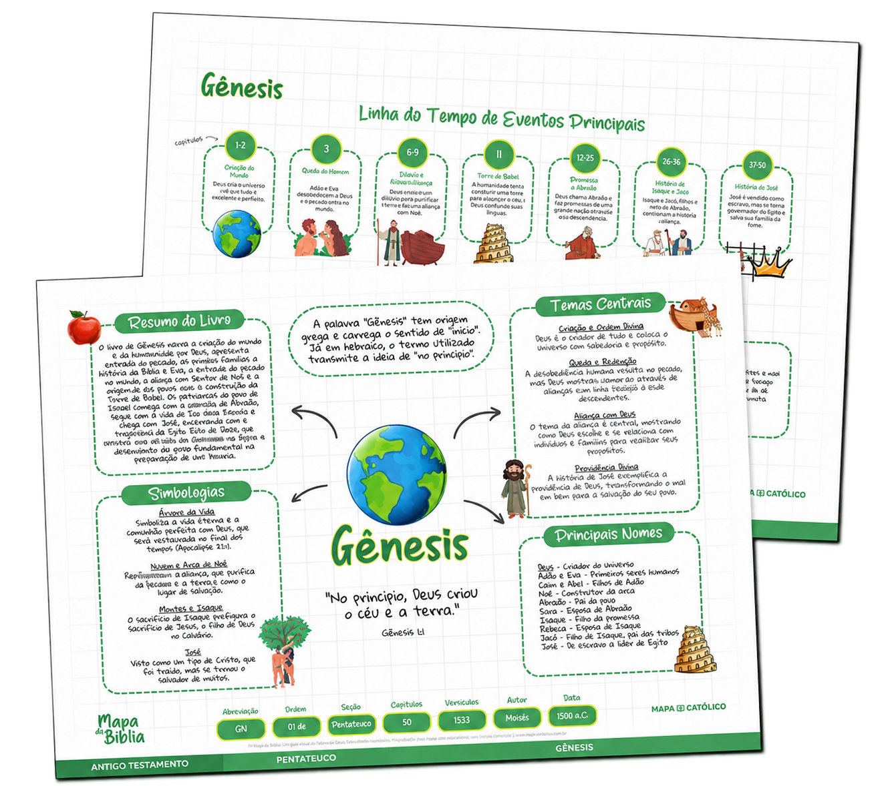
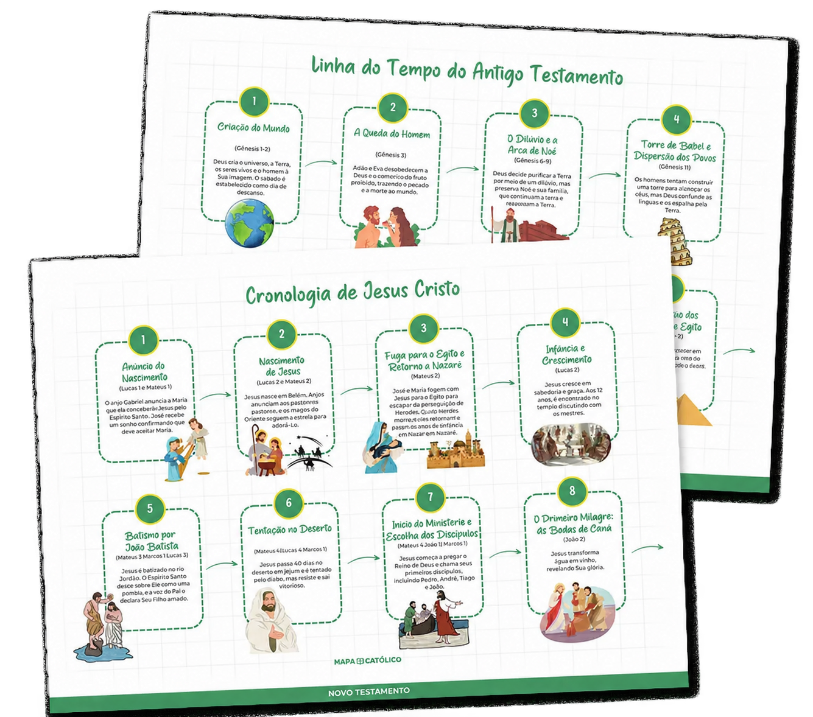
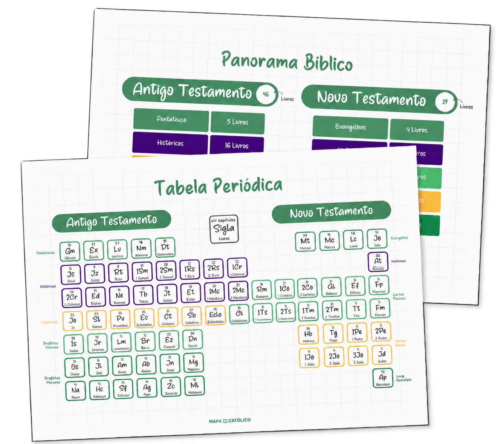
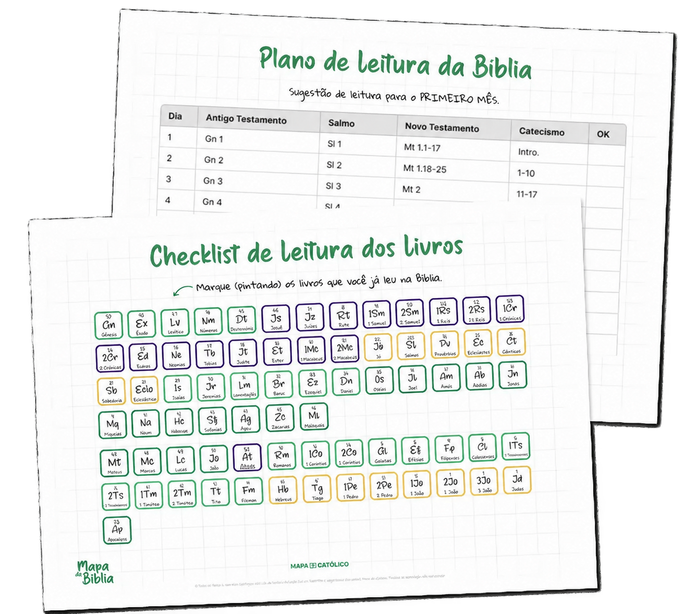

NAS DUAS EDIÇÕES
Mapas dos 73 livros
Uma visão organizada de cada livro, com temas centrais, personagens e conexões para orientar seu estudo.
Organize seu estudo da Palavra com mapas visuais, linhas do tempo e um plano de leitura para acompanhar no seu ritmo.
Bíblia Católica · Arquivos em PDF · Você pode imprimir

Os mapas reúnem temas, personagens e acontecimentos em uma organização visual que ajuda você a se localizar no conteúdo e retomar o que estudou.
Abra sua Bíblia, escolha um livro e use o material como apoio. Uma forma prática de dar mais direção aos seus momentos de leitura.
Os mapas dos 73 livros estão nas duas edições. Na Premium, você também recebe recursos para planejar, acompanhar e registrar seu estudo.
Uma visão organizada de cada livro, com temas centrais, personagens e conexões para orientar seu estudo.

Acompanhe os principais acontecimentos bíblicos e entenda como eles se conectam ao longo da história.

Explore a organização do Antigo e do Novo Testamento, suas divisões e os diferentes grupos de livros.

Organize suas leituras e acompanhe o que já estudou, adaptando o material ao seu próprio ritmo.
Ao receber acesso ao material, salve os arquivos no dispositivo que você utiliza para estudar.
Selecione um livro, consulte o panorama ou siga seu plano de leitura.
Leia na tela ou imprima os arquivos para fazer anotações no papel, no seu ritmo.
Os mapas complementam o estudo e não substituem a leitura da Bíblia.
Encontre um ponto de partida e situe cada livro no conjunto das Escrituras.
Localize temas e acontecimentos com uma apresentação fácil de percorrer.
Retome os assuntos estudados e relembre suas principais conexões.
Adapte a leitura à sua rotina e escolha entre estudar na tela ou no papel.
“Antes, me sentia perdido ao tentar entender certos livros da Bíblia. O Mapa me trouxe uma visão panorâmica que fez toda a diferença!”
“O Mapa da Bíblia transformou meu estudo bíblico! Agora, consigo entender os contextos, as conexões e a mensagem de cada livro.”
“Entender o contexto de cada livro me ajudou a aplicar os ensinamentos da Bíblia na minha vida. Sou muito grato por esse material!”
Material digital em PDF.
O link de compra desta edição na Zuptos será disponibilizado em breve.
Garantia de 7 dias.Material digital em PDF.
Entrega exclusivamente digital: um PDF com as imagens e os materiais incluídos na edição escolhida. Você pode imprimir por conta própria. Nenhum material físico será enviado.
É digital, em PDF. Nenhum material físico será enviado.
Sim. Você pode imprimir em casa ou em uma gráfica, por sua conta.
A Básica inclui os mapas dos 73 livros. A Premium também inclui cronologia, panorama bíblico, plano de leitura com checklist e caderno de estudo.
Sim, as duas edições têm garantia de 7 dias.